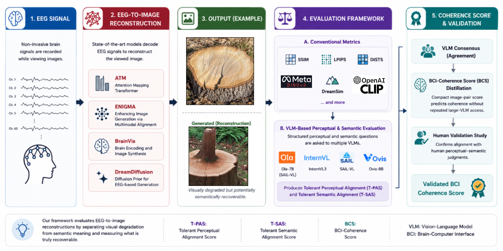
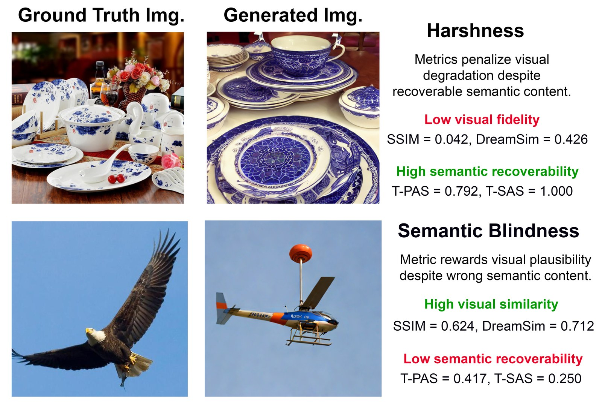
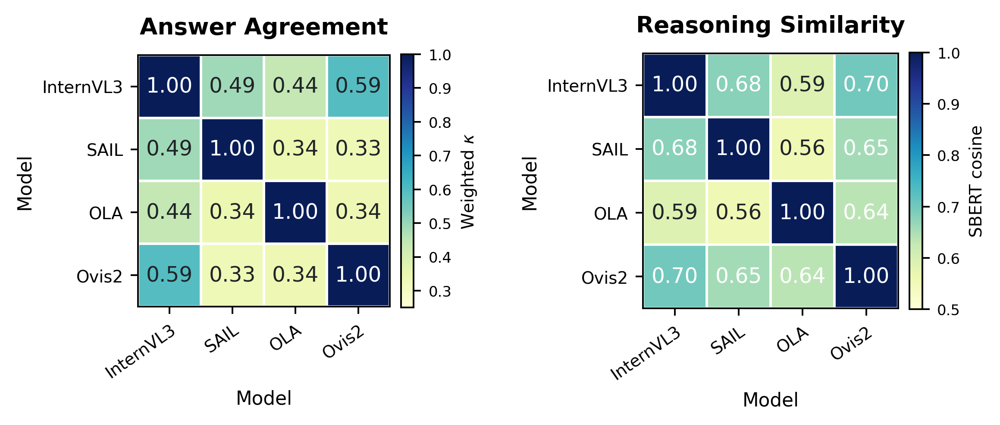

The problem
Metric harshness and semantic blindness
Blurry EEG reconstructions can preserve meaning but receive low visual scores, while plausible images can depict the wrong object or scene.
EEG-to-image evaluation
A VLM-Assisted Perceptual-Semantic Coherence Framework for EEG-to-Image Reconstruction.
At a glance
The problem
Blurry EEG reconstructions can preserve meaning but receive low visual scores, while plausible images can depict the wrong object or scene.
Our solution
BCS separates perceptual recoverability from semantic recoverability, then merges consensus supervision with human agreement into one coherence evaluator.

Problem to solution
In EEG-to-image reconstruction, a generated image can be blurry but still grounded in the right object, or it can look clean while drifting semantically. BCS turns that ambiguity into targeted VLM questions and a distilled consensus score.

Low-level metrics punish blur and noise even when the object or scene is still recoverable.
A clean-looking image can receive credit while depicting a different object, category, or context.
BCS asks separately about layout, shape, texture, color, category, identity, function, count, and context.
Four open-weight VLMs reduce dependence on any single model’s calibration quirks.
A compact BCS head learns the multi-VLM consensus and aligns the combined score with human agreement.
More key results
The validation section stays concise: show VLM agreement, show human agreement, then send readers to the paper for the full protocol.

Cohen’s κ across 18 annotators. The combined judgment is the reliable one.
Citation
Accepted at HBAI 2026 (IJCAI-ECAI Workshop), Poster.
@inproceedings{tiwari2026lostvisualtranslation,
title = {Lost in Visual Translation: A VLM-Assisted Perceptual-Semantic
Coherence Framework for EEG-to-Image Reconstruction},
author = {Sukriti Tiwari and Subrahmanyam B H V S P and Nidhi Goyal and Sai Amrit Patnaik},
booktitle = {Proceedings of the 5th International Workshop on Human Brain
and Artificial Intelligence (HBAI 2026), IJCAI-ECAI 2026},
year = {2026},
note = {Poster}
}